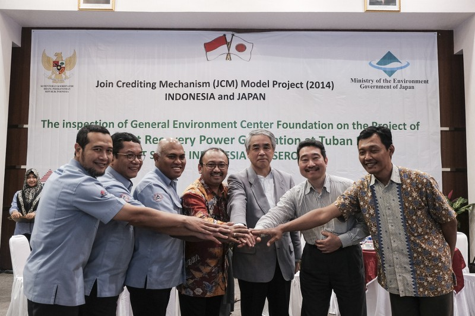
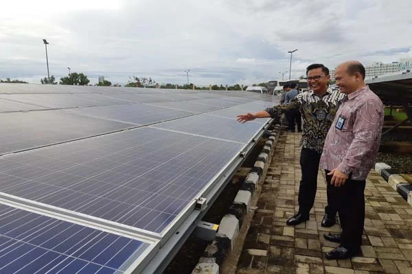
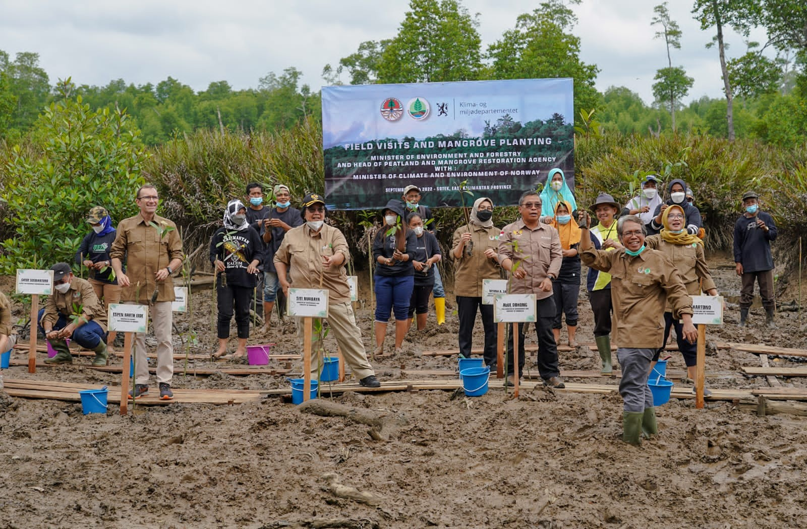
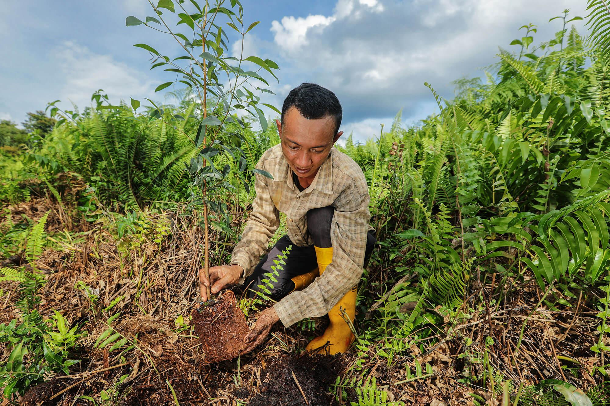
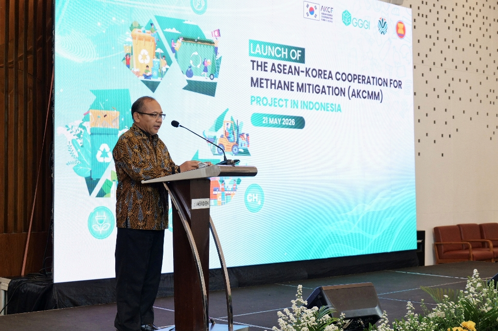
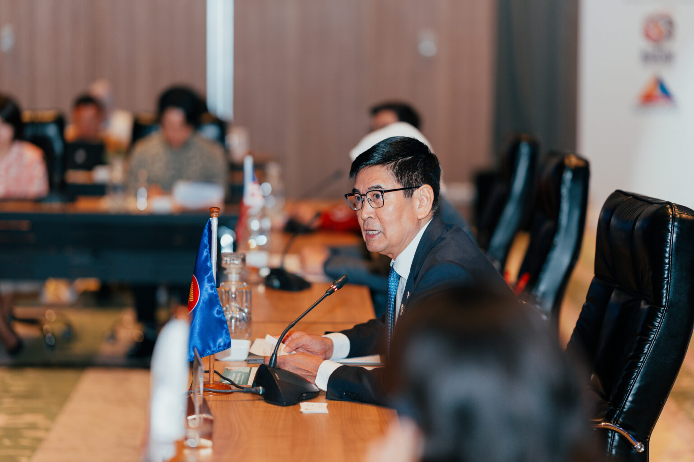
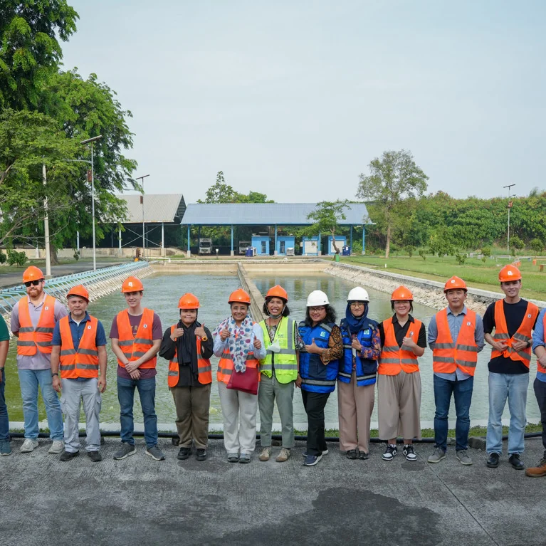
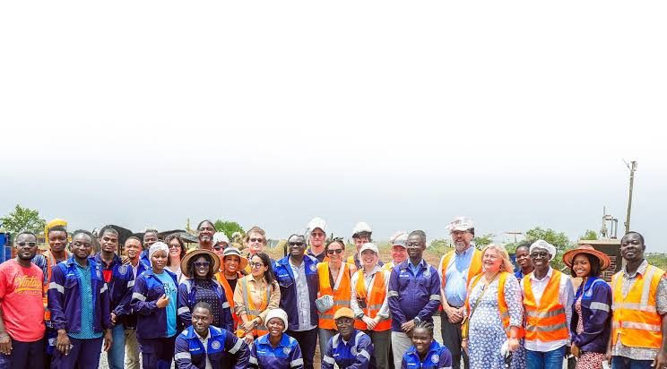

Kerja sama bilateral adalah hubungan kerja sama antara dua negara untuk mencapai kepentingan bersama. Salah satu contohnya adalah kerja sama Indonesia dan Jepang melalui Joint Crediting Mechanism (JCM), yang dimulai pada 2013 dan melibatkan pemerintah kedua negara, termasuk kementerian yang menangani lingkungan dan energi. Melalui mekanisme ini, Indonesia dan Jepang bekerja sama untuk mengurangi emisi gas rumah kaca dengan mendorong penggunaan teknologi rendah karbon, seperti energi bersih, teknologi hemat energi, dan infrastruktur ramah lingkungan. Indonesia berperan dalam menjalankan berbagai proyek, sedangkan Jepang memberikan dukungan berupa teknologi, investasi, dan pendanaan. Kerja sama ini memberikan manfaat bagi Indonesia berupa pengembangan teknologi ramah lingkungan, dukungan dana, serta kesempatan untuk mengurangi emisi sambil tetap mengembangkan perekonomian. Jepang juga memperoleh kontribusi pengurangan emisi yang membantu mencapai target iklimnya. Contoh tindakan nyata dari kerja sama ini adalah penggunaan teknologi yang lebih hemat energi di berbagai industri dan pembangunan fasilitas energi bersih. JCM membantu kedua negara mencapai target pengurangan emisi masing-masing melalui proyek yang hasilnya dapat diukur. Oleh karena itu, kerja sama ini mendukung SDG 13 dengan mendorong tindakan nyata untuk mengurangi perubahan iklim sekaligus mendukung pembangunan yang lebih ramah lingkungan.


Kerja sama multilateral merupakan kerjasama yang melibatkan banyak negara untuk mencapai tujuan bersama dalam menangani permasalahan global. Salah satu contohnya adalah Persetujuan Paris (Paris Agreement), yaitu kesepakatan mengenai perubahan iklim yang dibuat melalui UNFCCC (United Nations Framework Convention on Climate Change) dan melibatkan negara-negara dari berbagai belahan dunia. Persetujuan ini bertujuan untuk menjaga kenaikan suhu rata-rata bumi agar tidak mencapai 2°C serta berusaha membatasinya hingga 1,5°C dibandingkan masa sebelum industrialisasi. Negara-negara yang terlibat berkomitmen untuk menyusun target iklim, mengurangi emisi, meningkatkan kesiapan menghadapi dampak perubahan iklim, dan memperbarui upaya mereka secara berkala. Indonesia ikut terlibat dengan Persetujuan Paris melalui UU Nomor 16 Tahun 2016 dan menyusun target pengurangan emisi nasional atau NDC (Nationally Determined Contribution). Melalui kesepakatan ini, Indonesia dan negara lainnya dapat memperkuat upaya penanganan perubahan iklim, memperoleh dukungan pendanaan dan teknologi, serta meningkatkan kemampuan menghadapi dampak perubahan iklim. Contoh tindakan nyata dari kesepakatan ini adalah negara-negara menyusun rencana pengurangan emisi, mengembangkan energi bersih, dan melindungi hutan. Persetujuan Paris juga mendorong setiap negara untuk terus meningkatkan upaya penanganan perubahan iklim, bukan hanya membuat target. Kesepakatan ini mendukung SDG 13 karena menjadi dasar bagi negara-negara untuk menetapkan target dan melakukan tindakan nyata dalam mengurangi pemanasan global serta meningkatkan ketahanan terhadap perubahan iklim.


Kerja sama regional adalah kerjasama yang dilakukan oleh negara-negara dalam satu kawasan untuk mengatasi permasalahan bersama. Di Asia Tenggara, salah satu bentuknya dilakukan melalui ASEAN (Association of Southeast Asian Nations), termasuk ASEAN Working Group on Climate Change (AWGCC). Forum ini melibatkan negara-negara anggota ASEAN, termasuk Indonesia, untuk membahas masalah perubahan iklim, bertukar informasi, dan merencanakan tindakan bersama. Kerja sama tersebut juga mencakup pengembangan teknologi, pendanaan, pendidikan lingkungan, serta upaya mengurangi dampak perubahan iklim. Melalui AWGCC, negara-negara ASEAN dapat menyusun program, berbagi pengalaman, dan meningkatkan kemampuan dalam menghadapi tantangan lingkungan. Indonesia ikut berpartisipasi dalam pembahasan dan pelaksanaan agenda iklim ASEAN bersama Malaysia, Singapura, Thailand, Vietnam, Filipina, dan negara anggota lainnya. Contoh tindakan nyata dalam kerja sama ini adalah berbagi pengetahuan mengenai cara menghadapi banjir, menjaga hutan, mengurangi polusi, serta meningkatkan kesiapan menghadapi cuaca ekstrem. Kerja sama ini bermanfaat karena negara-negara dapat saling belajar dan tidak harus menghadapi masalah perubahan iklim sendirian. Selain itu, koordinasi antarnegara membantu membuat upaya penanganan lingkungan menjadi lebih terarah. Kerja sama ASEAN mendukung SDG 13 melalui upaya bersama untuk memperkuat ketahanan terhadap perubahan iklim, mengurangi risiko bencana, dan mencari solusi yang sesuai dengan kondisi kawasan.


Kerja sama internasional merupakan kolaborasi antarnegara dalam menangani permasalahan yang melampaui batas wilayah dan membutuhkan perhatian dunia. Salah satu contohnya adalah Global Methane Pledge, yaitu komitmen global yang dipelopori oleh Amerika Serikat dan Uni Eropa pada 2021. Indonesia termasuk negara yang bergabung bersama banyak negara lainnya untuk mengurangi emisi metana global setidaknya 30% pada 2030 dibandingkan tingkat emisi tahun 2020. Metana merupakan salah satu gas rumah kaca yang berkontribusi terhadap pemanasan global, sehingga pengurangannya menjadi bagian penting dalam menangani perubahan iklim. Dalam komitmen ini, Indonesia dan negara-negara peserta berupaya mengurangi emisi metana melalui perbaikan pengelolaan sampah, pertanian, serta sektor energi. Negara-negara juga didorong untuk meningkatkan pengukuran emisi, berbagi pengetahuan, dan menerapkan langkah pengurangan emisi di negaranya masing-masing. Contoh tindakan nyata yang dapat dilakukan adalah mengurangi sampah organik yang menumpuk di tempat pembuangan akhir dan memperbaiki pengelolaan limbah agar gas metana yang dihasilkan berkurang. Kerja sama ini bermanfaat untuk mengurangi gas rumah kaca, memperbaiki kualitas lingkungan, dan mendorong kebijakan yang lebih ramah iklim. Global Methane Pledge mendukung SDG 13 melalui target bersama dan tindakan nyata dari berbagai negara untuk memperlambat pemanasan global.